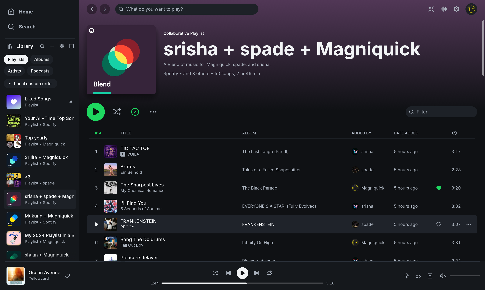
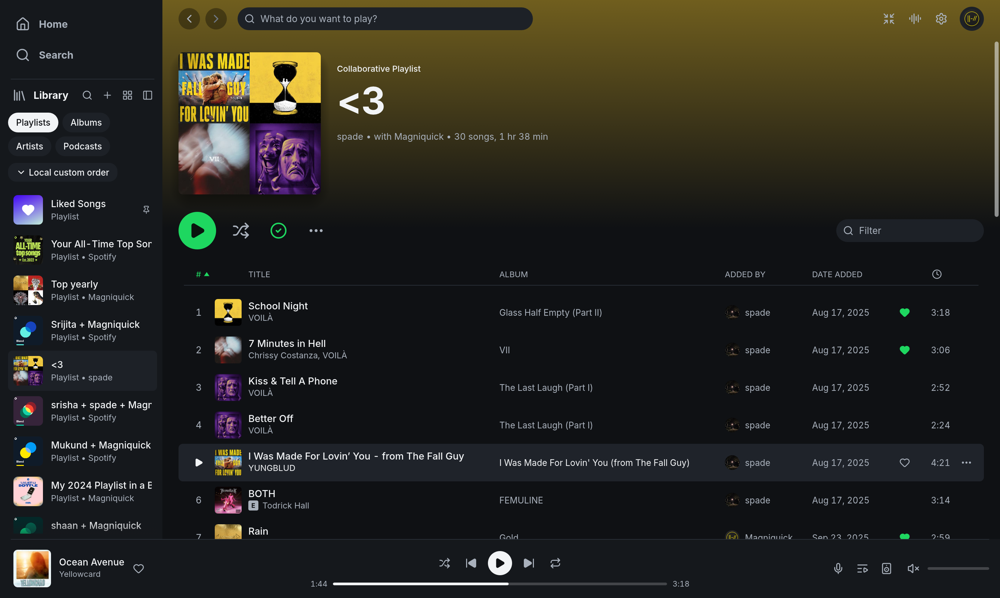

Before, a Blend showed no Added by column and no members, and the Added by column showed names only. After, a Blend names its members in the byline and shows an Added by column, and every adder has a round picture beside the name. At the narrow width the column is hidden in both.
The Blend ("Kasia + Sam") and the members' pictures come from local-only demo scenes blend and avatars that are not part of the PR.
Baseline: crmne/spotifast main 7e2d6c5. Candidate: Magniquick/spotifast added-by f9da2f7. Captured on Linux (CachyOS) in a headless Wayland compositor (sway) with demo data; pointer and scrolling driven through a virtual pointer. Keys: b before, a after.
Real-account captures from the running app on Linux (CachyOS, Hyprland), dark theme. Window sizes differ from the demo captures.

